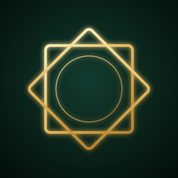

مصحف الإمام عاصم
بروايتي حفص وشعبة عن عاصم · Ḥafṣ & Shuʿbah from ʿĀṣim
مصحف الإمام عاصم بروايتي حفص وشعبة عن عاصم، تظهر فيه مواضع رواية شعبة باللون الأحمر مع القراءتين وحاشية المصحف المطبوع. تطبيق خيري مجاني (صدقة جارية)، بلا إعلانات ولا تتبع، ويعمل دون إنترنت.
الدعم والملاحظات: افتح بلاغًا هنا · سياسة الخصوصية
The Mushaf of Imam ʿĀṣim in the riwayahs of Ḥafṣ and Shuʿbah, with every place the Shuʿbah reading differs shown in red, plus both readings and the printed mushaf's margin notes. A free charity app (ṣadaqah jāriyah): no ads, no tracking, works offline.
Support & feedback: open an issue · Privacy policy